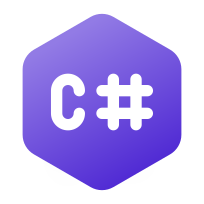
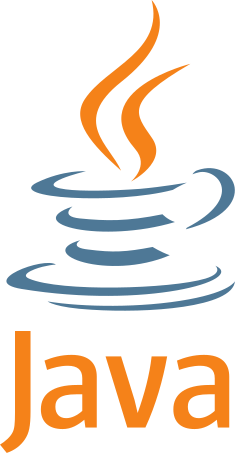

Qt Bridges is a new door
into the ecosystem.
But this session is about different ones
Where Qt Bridges stands
- The first phase: Rust and C# (TP)
- QML owns the UI, your language owns the logic


Where Qt Bridges could be


The questions for this room
- Which other languages deserve a place in the Qt ecosystem?
- A a binding, a bridge or something else?
- How can
Qtyou help?
What is in the Qt 5 meta-repository?
Lines of code with cloc, 6.8M in total, 3rdparty excluded. Highlighted: languages from the watch list or the Qt Bridges candidates.
Skipped: HTML, XML, Markdown, CSS, Text, JSON, SVG, YAML, TOML, XSLT, XSD, diff, INI, CSV, Qt Linguist, XML (Qt/GTK), Qt Project, Mustache, ProGuard, Protocol Buffers, DTD, PO File, JSON5, PlantUML, IDL, Properties, Windows Resource File, Windows Module Definition, ANTLR Grammar, lex, reStructuredText
Signals from outside Qt
Python is being rebuilt in Rust
- ruff, uv, pydantic-core, polars…
- Users still write
pip installand never notice the language
Zig in getting serious
- Ghostty, Bun, TigerBeetle
- Zig 0.16 (April 2026): still pre-1.0
Go to Rust rewrites
- Discord services, InfluxDB 3
- Teams move when the pain is high enough
Lesson: adoption wins when the new language is invisible at the boundary, and a framework that talks to one language is great.
Signals from inside Qt
Swift, from two sides
- Swift annotations in the Qt headers
- qt-swift imports every Qt 6 module
- Swift C++ interop is an official workgroup
Rust prototypes
- Discussions about new prototypes in Rust
- An implementation language, not a binding for users
- Different needs: ABI, build, packaging
Chromium needs Rust
- So QtWebEngine does too
- It lands in our CI as a build dependency
The quietest way a language enters an ecosystem is through the build.
What ruff and uv actually did
- Picked command line tools, not the interpreter
- Kept the same interface and the same files in and out
- Won on speed first, then on one binary to install
- Contributors came from the Rust community
$ pip install flake8 isort pyupgrade ...
$ flake8 . # seconds
$ pip install ruff
$ ruff check . # milliseconds
Qt ships a whole family of exactly this kind of tool.
Which Qt tools would be the first candidates?
| Tool | Job | Why it is a candidate | Difficulty |
|---|---|---|---|
rcc | Compiles resources into C++ | Files in, source out; no Qt types needed | low |
lrelease, lupdate | Translations | Parsing and file formats | low to medium |
qmlformat, qmllint | QML style and checks | Needs a QML parser (exists as a separate component) | medium |
windeployqt, macdeployqt | Packaging | Mostly file and process work | low |
uic | Forms to C++ | XML in, source out | medium |
qdoc | Documentation generator | Source comments in, HTML out (Clang to parse C++) | medium to high |
moc | The meta-object compiler | The big one: it must understand C++ | high |
Two proofs of concept, and a safe way to try
for f in $(find . -name '*.qrc'); do
rcc "$f" -o /tmp/cpp.cpp
rcc-rs "$f" -o /tmp/rs.cpp
cmp /tmp/cpp.cpp /tmp/rs.cpp || echo "DIFF $f"
done
Why this is different from Qt Bridges
The upside
- No ABI need: the tool is a process, not a library
- Memory safety where Qt parses untrusted input
- A friendly place for Rust contributors to start
- Qt has done language migrations of its tools before
The cost
- Qt's host tools are built first: Rust would become a requirement to bootstrap Qt
- Distributions, Yocto and offline builds care a lot about that
- Two implementations to keep in sync during the transition
- Dependencies:
cargoand crates need a supply chain policy
A taxonomy of ways in
| Door | What the language gets | Who pays the maintenance | Example |
|---|---|---|---|
| 1. Binding | Qt's C++ API, mirrored | The binding team, forever | PySide, QtJambi |
| 2. Bridge | Logic in the language, UI in QML | A small meta-object boundary | Qt Bridges, CXX-Qt |
| 3. Interop | Call through the language's own FFI | The language community | Swift C++ interop, Zig @cImport |
| 4. Toolchain | A seat in Qt's build and CI | Qt's own infrastructure | Rust for QtWebEngine |
| 5. Protocol | Talks to a Qt UI over IPC, no FFI needed | Nobody, mostly | D-Bus, Qt Remote Objects |
Door 1 and 2: binding vs bridge
Binding
- Maintenance scales with the size of Qt
- Gives you all of Qt, including Widgets
- Needs a generator (Shiboken, SWIG…) and a team
- Many fell behind: wiki.qt.io/Language_Bindings
Bridge
- Maintenance scales with the meta-object boundary
- Gives you QML and Qt Quick, not every class
- Needs good metadata in the host language
- Nature of the design: some use cases are out of scope
Both need someone paid or devoted to keep them alive.
Door 3: Interop, let the language come to us
- Some languages are built around talking to C and C++
- Qt gets better by being easier to consume, not by writing the adapter
- What helps: annotations, stable headers, machine readable API descriptions
// Zig: headers become declarations
const c = @cImport({
@cInclude("qt_shim.h");
});
pub fn main() void {
const app = c.qapp_new();
defer c.qapp_free(app);
_ = c.qapp_exec(app);
}
Illustrative: qt_shim.h is a hypothetical C shim, see the next slides.
The missing piece: a C ABI for the meta-object system
- Zig, Go, Odin, Nim, Crystal, Gleam (via NIFs), Swift, C#, Java… all can call C
- None of them can call C++ templates, overloads and virtuals in a stable way
- Every project today writes its own shim: miqt for Go, cxx-qt for Rust, bespoke ones elsewhere
A tiny, officially stable C surface for registering types, properties, signals and slots with the QML engine would be a force multiplier.
A sketch of the C surface
/* qt_shim.h: hypothetical, illustrative only */
typedef struct QtApp QtApp;
typedef struct QtType QtType;
QtApp *qtapp_new(int argc, char **argv);
int qtapp_exec(QtApp *);
QtType *qttype_begin(const char *qml_name);
void qttype_property(QtType *, const char *name,
int meta_type,
QtGetter, QtSetter,
const char *notify);
void qttype_slot(QtType *, const char *name,
QtSlot fn);
int qttype_register(QtApp *, QtType *,
const char *uri,
int major, int minor);
- Describes exactly what a bridge already generates: name, properties, signals, slots, a callback each
- Opaque handles and C types only, so there is nothing to break across compilers
- A bridge generator, a Zig
comptimeor an Odin hand-binding all target the same thing - It could sit under the existing bridges too
Door 4 and 5: toolchain and protocol
Toolchain citizen
- Rust compiler in Qt's CI because of QtWebEngine
- Question: is this the precedent for other languages in the build?
- Cost: provisioning, reproducibility, license and supply chain review
Protocol
- The language never touches Qt: a Qt Quick front end talks to it over a socket, D-Bus or Qt Remote Objects
- Works for any language today, with no Qt work at all
- Cost: latency, two processes, schema discipline
Protocol is underrated: great for Elixir, Gleam and Go back ends, where the runtime is the point.
C++26 reflection: what is real today
- Static reflection (P2996 + P3394) is part of C++26:
^^T,std::meta, annotations[[= ...]] - GCC 16 has a partial implementation with
-std=c++26 -freflection - Mainline Clang and MSVC: no production-ready support (Bloomberg has Clang fork 2996)
- Reflection help generate new declarations or types in supported contexts (Cannot add data-members, or code injection)
Qt supports all three compilers, so moc cannot go away soon. The question is the direction.
First steps inside Qt
- QRangeModel (blog post, January 2026): a hackathon prototype that was made official
- Plain structs become item-view models, with no
Q_GADGET: member names become roles - Can the compiler do much of what moc does?
- The hard part named there: the
signals:andslots:blocks
// from the QRangeModel post
static consteval auto count()
{
constexpr auto ctx =
std::meta::access_context::current();
return nonstatic_data_members_of(
^^T, ctx).size();
}
And a community proof of concept: reflect-moc
- Header-only: builds a stock
QMetaObjectfrom reflection, nomocrun - Tested on GCC 16.2 and Qt 6.10; four Qt examples match moc's output
- Signals become data members, because reflection cannot add functions
- Missing:
QML_ELEMENT,Q_GADGET,BINDABLE; GCC only
Experimental, third party: github.com/wrocpp/reflect-moc
class Counter : public QObject {
RQT_OBJECT
RQT_PROPERTY(int value READ value
WRITE setValue
NOTIFY valueChanged)
public:
int value() const { return value_; }
[[= rqt::slot]] void setValue(int v) {
if (v == value_) return;
value_ = v;
emit valueChanged(v);
}
[[= rqt::names("value")]]
rqt::signal<void(int)> valueChanged;
private:
int value_ = 0;
};
What a moc-less future means for other languages
- Bindings targets the same
QMetaObjecttable, so how it is made matters, not only C++ - Good: Compiler-generated metadata could be easier for language bindings to consume.
- Good: A C-style registration API could simplify cross-language integration.
- Risk: Two ways to build a meta-object; bridges and generators must handle both
- Risk:
QML_ELEMENTandqmltyperegistrarsit on top of moc output today
Reflection is C++ arriving where Rust, Swift and Zig already are: describe the type, let the compiler do the rest.
Who is on the watch list?
Swift
Safe, with native C++ interopZig
A better C, with comptimeGleam
Typed functional, BEAM and JSCarbon
An experimental successor to C++Mojo
Python-flavoured, GPU-firstV
Simple, compiles to COdin
Data-oriented C alternativeGoose
Memory-safe, compiles to C…and a long tail: Go, Nim, Crystal, D, Dart, Roc, Hylo, cppfront
qt-swift: Qt's C++ API, imported, not mirrored
- Repository: github.com/torarnv/qt-swift, Qt copyright, LGPL-3.0 or commercial
- A Swift package:
import QtWidgets,import QtQuick… for every installed Qt 6 module - A SwiftPM build tool plugin generates a Swift module per Qt module, on top of Swift's C++ interop
- Qt 6.8+, Swift 6.4+ (nightly preferred), macOS and Linux
import QtWidgets
@main
struct HelloWidgets: QtApplication {
init() {
let title: QString = "Hello, Qt!"
let widget = QWidget()
widget.setWindowTitle(title)
widget.resize(400, 300)
widget.show()
}
}
Adapted from Examples/HelloWidgets.
qt-swift: what it tells us
Encouraging
- It is door 3 in practice: the compiler does the mirroring, so nobody hand-maintains the API surface
- The maintenance surface moves to Swift's C++ importer, which Apple and the community already maintain
- Qt types (
QStringtoString) are usable like Swift ones
Open questions
- Early: needs Swift 6.4 nightly, works around importer bugs (upcasts, default arguments) with
unsafeBitCast - README and examples show no QObject subclassing, signals, slots or moc: Swift types are not yet visible to QML
- Linux and macOS only for now
The missing half is a bridge: Swift types exposed to QML. Annotations in the headers and the reflection work both help here. It is the natural next phase.
Zig: why people care
- No hidden control flow, no hidden allocations
- comptime: generics and reflection in the same language
zig ccandzig c++: a drop-in cross compiler for C and C++- Reads C headers directly:
@cImport
const std = @import("std");
pub fn main() void {
std.debug.print("Hello!\n", .{});
}
Zig and Qt: the honest view
Opportunities
comptimecan generate the QML registration from a struct: bridge-like ergonomics with no macro systemzig c++as a CI cross compiler for Qt itself (an experiment worth running)- Fits embedded and small-footprint use cases
Blockers
- C only: no C++ interop, so a C shim is mandatory
- Pre-1.0: the language and std change on every release
- No
moc-like step, so the meta-object has to be built by hand
Verdict: a community project if we provide the C surface.
Gleam: friendly, and a protocol fit
- Statically typed, functional, friendly compiler errors; runs on the BEAM and compiles to JavaScript
- v1.0 in March 2024; v1.19 (Oct 2026) no longer emits Erlang source: feeds Erlang abstract forms to the compiler (faster builds and stacktraces that point at Gleam code)
- BEAM processes and Qt signals share a message passing mindset
- But no FFI of its own (NIFs or ports) and no macros or reflection: nothing to generate a bridge from
import gleam/io
pub fn main() {
io.println("Hello, Qt!")
}
Verdict: protocol first (Gleam back end, QML front end). A bridge is the wrong shape here.
Carbon: the C++ successor attempt
- Started at Google, experimental, explicitly not ready for use
- Goal: bidirectional C++ interop good enough to migrate incrementally
- The roadmap has been about a working toolchain with C++ interop; there is no 1.0
Qt is exactly the kind of codebase Carbon's story is written for:
huge, templated, macro-heavy, moc-processed C++.
Carbon: what the code looks like
package Sample api;
class Counter {
var value: i32;
fn Add[addr self: Self*](n: i32) {
self->value += n;
}
}
fn Main() -> i32 {
var c: Counter = {.value = 0};
c.Add(42);
return c.value;
}
- Rust-like declarations, C++-like control flow
- The headline feature is
import Cppof existing headers - For Qt that would mean
QObject, templates andQ_OBJECTmacros
Approximate: Carbon's syntax is still changing.
Verdict: watch, do not bet, and the same for cppfront. Keep Qt headers clean, and tell the Carbon team how Q_OBJECT breaks things.
Mojo: the news is recent
- 1.0 released in August 2026, and the compiler was open sourced under Apache 2.0
- Modular is now part of Qualcomm, a name that Qt knows well
- Python-like syntax, but no longer promising to be a Python superset
- Designed for GPU and accelerator programming first
Mojo can import Python modules, so PySide is reachable in principle today.
Mojo: what the code looks like
struct Point:
var x: Float64
var y: Float64
def __init__(out self, x: Float64, y: Float64):
self.x = x
self.y = y
def scale(mut self, k: Float64):
self.x *= k
self.y *= k
def main():
var p = Point(1.5, 2.0)
p.scale(2.0)
print(p.x, p.y)
Looks like Python, but struct, var and out/mut argument conventions are not valid Python: this is compiled, statically typed code.
from python import Python
def main():
var qt = Python.import_module(
"PySide6.QtCore")
print(qt.__version__)
Mojo's documented way to use Python modules. I have not tried this with PySide6.
Under Mojo: MLIR, and what Qt could learn
MLIR
- A framework for building compilers: you define dialects (
arith,gpu,spirv…) - Programs are lowered step by step down to LLVM IR
- Used by Mojo and by machine-learning compilers
Cranelift
- A fast, small code generator written in Rust
- A compiler backend centered on CLIF
- Core of Wasmtime, and an optional Rust backend
- Trades some code quality for compile time
Qt’s QML and shader pipelines offer precedents for staged compilation, but cross-language bindings still need explicit integration.
The same function, three IRs
MLIR
func.func @add(%a: i32,
%b: i32) -> i32 {
%0 = arith.addi %a, %b : i32
func.return %0 : i32
}
The dialect is part of each operation name.
LLVM IR
define i32 @add(i32 %a, i32 %b) {
entry:
%0 = add i32 %a, %b
ret i32 %0
}
One fixed, low-level IR. MLIR lowers to it.
Cranelift (CLIF)
function %add(i32, i32) -> i32 {
block0(v0: i32, v1: i32):
v2 = iadd v0, v1
return v2
}
Its own small IR, straight to machine code. No LLVM.
For one add they look alike: the difference shows up with tensors, GPUs and compile time, not with integers.
V (Vlang): simple, and not a priority
- Small, fast to compile, compiles to C by default
- Direct C calls with
fn C.name, no binding generator - Still pre-1.0, with weak metadata to describe a QObject, and its own UI toolkit
#flag -lm
#include <math.h>
fn C.sqrt(x f64) f64
fn main() {
name := 'Qt'
println('Hello, ${name}!')
println(C.sqrt(2.0))
}
Verdict: nothing to do except publish the C surface and let anyone try.
Odin: a C alternative, a good community project
- Data-oriented, no classes or exceptions, manual memory with an implicit allocator context
foreign importlinks a C library but cannot parse headers; avendorcollection ships SDL, raylib, Vulkan…- Stable and small, but C ABI only, no reflection, a single main author
package main
foreign import qtshim "system:qtshim"
@(default_calling_convention = "c")
foreign qtshim {
qtapp_new :: proc(argc: i32,
argv: [^]cstring) -> rawptr ---
qtapp_exec :: proc(app: rawptr) -> i32 ---
}
main :: proc() {
app := qtapp_new(0, nil)
_ = qtapp_exec(app)
}
Illustrative: qtshim is the hypothetical C surface.
Verdict: friendly tier. With the C surface, an Odin vendor:qt is a weekend of someone else's work.
Goose: safe, compiles to C, not actionable
- By Wouter van Oortmerssen (FlatBuffers, Lobster); see aardappel.github.io/goose
- Memory safe with no GC, no heap allocator, no lifetime annotations; emits one C file and calls C with
extern fn - Experimental: the README says the compiler was written almost entirely with AI.
// calling C
extern fn hypot(x: f64, y: f64) -> f64;
// a generic function
fn twice(x) { x + x }
// a growable array of structs
var items: Item[>..] = [];
Snippets from the project page.
Verdict: watch. Emitting C means the C surface is the whole interop story.
The long tail
| Language | Why it comes up | Qt angle |
|---|---|---|
| Go | Cloud, CLI tools, huge hiring pool | Community bindings exist (e.g. miqt); cgo cost and GC/event-loop mismatch |
| Nim | Python-like, compiles to C or C++ | Compiling to C++ is a real interop advantage |
| D | Long history with C++ interop | dqt is the cautionary tale |
| Dart | Flutter is a direct neighbour | Competitor and potential consumer of our back end |
| Hylo, Roc, Vale | New ideas on safety and value semantics | Too early; only worth following |
My (subjective) scorecard
| Language | C / C++ interop | Metadata for QML | Stability | Qt story today |
|---|---|---|---|---|
| Python | Shiboken | generators | stable | Qt for Python, Bridges |
| Rust | CXX | proc macros | stable | Bridges, CXX-Qt |
| C# | C via P/Invoke | attributes, generators | stable | Bridges |
| Swift | official C++ interop | macros, attributes | stable | annotations, Bridges |
| Kotlin / Java | JNI | annotations | stable | QtJambi, Bridges |
| Go | C via cgo | tags, go generate | stable | community bindings |
| Zig | C only | comptime | pre-1.0 | libqt6zig |
| Gleam | NIFs and ports | no macros | young 1.x | none |
| Carbon | the whole point, not ready | unknown | experimental | none |
| Mojo | C and Python | limited | 1.0 (Aug 2026) | via Python |
| V | C, trivially | weak | pre-1.0 | none |
| Odin | C only | no reflection | stable, no 1.0 | none |
| Goose | C via extern fn | unknown | experimental | none |
green good fit - orange workable - red gap
Reading the table
- Some languages already have a metadata story: that is why the bridges exist
- Zig is the surprise: comptime gives it bridge-quality ergonomics, with C-only interop as the single hard blocker
- Gleam and Carbon do not need a bridge: one needs a protocol, the other needs time
- V and Odin score on interop and nothing else: great consumers of a C surface, poor candidates for a bridge
Six low-cost moves
- A stable C surface for type registration with the QML engine
- Machine-readable API promoted to a contract:
metatypes.jsonandqmltypesas inputs for generators - Annotations on public headers, following the Swift initiative
- A conformance suite: a small QML app any bridge can implement and run in CI
- A protocol-first recipe: Qt Quick front end plus any back end, documented and tested
- Stay reflection-ready: keep the meta-object description clean enough that moc or a compiler can produce it
A commitment model
| Tier | What Qt commits to | Candidates |
|---|---|---|
| Official | Maintained and released with Qt | C++, QML, Python, Bridges: Rust and C#; Qt's own tools could join here |
| Supported surface | Annotations and docs, no bridge yet | Swift (qt-swift is the natural base) |
| Friendly | Stable C surface, metadata, conformance suite | Zig, Odin, Go, Nim, V: anything with a C FFI |
| Watch | Nothing, except attention, and perhaps opinion? | Carbon, Mojo, Gleam, Goose, Hylo… |
The top tier is expensive on purpose. The lower tiers let communities do the expensive part.
Proposed entry criteria
- A named, active maintainer group that is not "the Qt Company"
- Real production users of the language on desktop or embedded
- Passes the conformance suite on Linux, Windows and macOS
- Uses only the stable, documented surface (no private headers)
- A release cadence that follows Qt's, or a clear compatibility range
Some died from the maintenance tail: a new language needs an owner outside Qt before it needs a place inside it.
Questions for the room
- Which language would you want to write Qt apps in next year?
- Is a C ABI for the meta-object system worth maintaining?
- Do the tiers and entry criteria make sense, or are they too heavy?
- Which Qt tool would you port to Rust first, and what is the bootstrap policy?
- How should Qt plan for moc and C++26 reflection while Clang and MSVC lag?
- Who here would volunteer to try Zig, Odin or Go against a C shim?